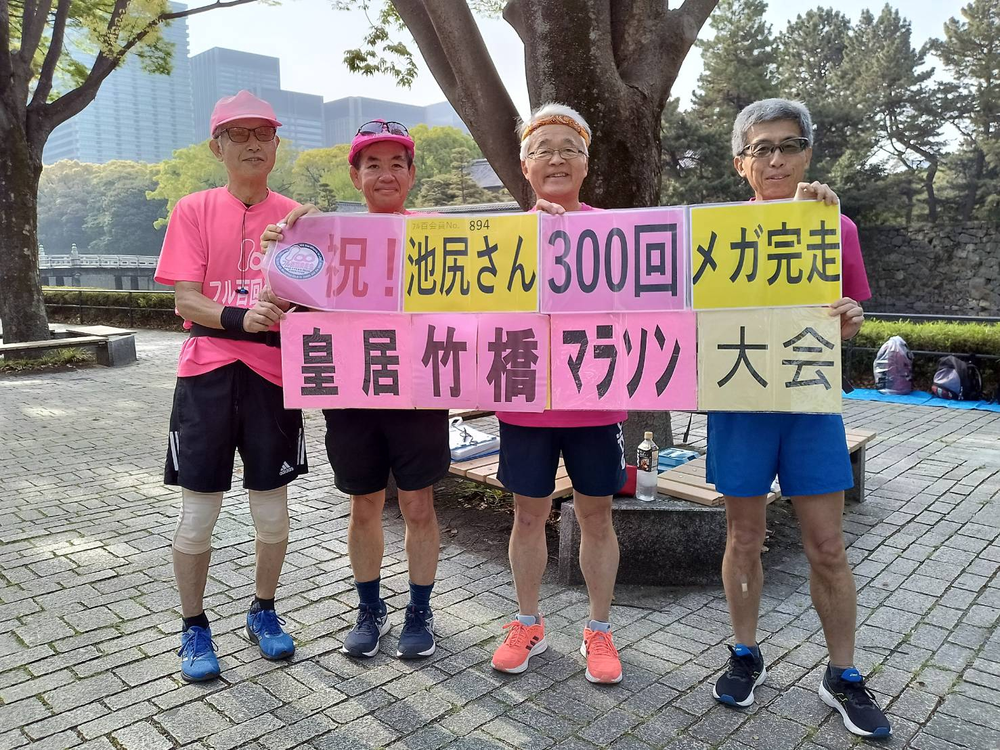
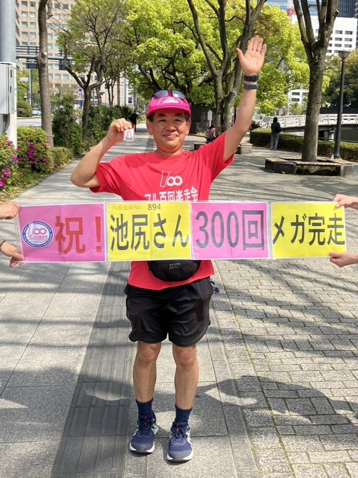

2025-04-19 05:13:45
会員No. ８９４ (香川県 ５９歳)


| No | 開催日 | 大会回数 | 大会名 | 開催地 | 種目(㎞) | 記録 |
|---|---|---|---|---|---|---|
| 201 | 2023-04-08 | 第18回 | 戸田・彩湖ウルトラマラソン | 埼玉県 | 71 | 8:14:37 |
| 202 | 2023-04-15 | 第445回 | 竹橋マラソン | 東京都 | フル | 5:30:02 |
| 203 | 2023-04-16 | 2023 | かすみがうらマラソン | 茨城県 | フル | 4:14:46 |
| 204 | 2023-04-22 | 第23回 | 真鶴マラニック | 神奈川 | フル | 7:08:27 |
| 205 | 2023-05-14 | 第269回 | 月例白鷺マラソン | 神奈川 | フル | 5:53:19 |
| 206 | 2023-05-27 | 第1回 | 箱根駅伝5区6区フルニック | 神奈川 | フル | 7:04:36 |
| 207 | 2023-06-04 | 第30回 | 奥武蔵ウルトラマラソン | 埼玉県 | 70 | 10:29:36 |
| 208 | 2023-06-17 | 第449回 | 竹橋マラソン | 東京都 | フル | 5:47:35 |
| 209 | 2023-06-25 | 第181回 | ユニバーサル月例 | 東京都 | フル | 6:05:06 |
| 210 | 2023-07-09 | 第33回 | ジョイフルマラソン大会 | 神奈川 | フル | 6:13:08 |
| 211 | 2023-07-15 | 第451回 | 竹橋マラソン | 東京都 | フル | 5:51:52 |
| 212 | 2023-07-16 | 第19回 | 丹沢湖マラニック | 神奈川 | フル | 8:58:29 |
| 213 | 2023-07-23 | 第29回 | 鎌倉マラニック | 神奈川 | フル | 9:46:42 |
| 214 | 2023-08-05 | 第452回 | 竹橋マラソン | 東京都 | フル | 6:07:22 |
| 215 | 2023-08-06 | 第34回 | 小田原箱根マラニック | 神奈川 | フル | 7:55:30 |
| 216 | 2023-08-13 | 第43回 | 2020東京五輪マラニック | 東京都 | フル | 8:19:07 |
| 217 | 2023-08-19 | 第10回 | 富士山山麓一周フットレース | 山梨県 | 100 | 16:06:50 |
| 218 | 2023-08-27 | 第25回 | 箱根上京フルニック | 神奈川 | フル | 7:30:22 |
| 219 | 2023-09-09 | 千葉顔マラソン | 千葉県 | フル | 8:58:08 | |
| 220 | 2023-09-10 | 第273回 | 月例白鷺大会 | 神奈川 | フル | 7:06:20 |
| 221 | 2023-09-23 | 第1回 | 箱根駅伝9区10区フルニック | 神奈川 | フル | 9:08:49 |
| 222 | 2023-09-24 | 第184回 | ユニバーサル月例 | 東京都 | フル | 5:55:32 |
| 223 | 2023-09-30 | 神奈川顔マラソン | 神奈川 | フル | 7:36:15 | |
| 224 | 2023-10-07 | 第456回 | 竹橋マラソン | 東京都 | フル | 5:29:08 |
| 225 | 2023-10-08 | 2023 | 東京夢舞いマラソン | 東京都 | フル | 6:35:04 |
| 226 | 2023-10-15 | 第12回 | 浜名湖一周エンジョイマラニック | 静岡県 | 100 | 16:03:00 |
| 227 | 2023-10-22 | 第185回 | ユニバーサル月例 | 東京都 | フル | 5:42:21 |
| 228 | 2023-10-28~29 | 第5回 | 錦秋の奥武蔵秩父ジャーニーラン | 埼玉県 | 147 | 25:02:29 |
| 229 | 2023-11-03 | 第34回 | ジョイフルマラソン大会 | 神奈川 | フル | 5:43:16 |
| 230 | 2023-11-04 | 第458回 | 竹橋マラソン | 東京都 | フル | 5:39:26 |
| 231 | 2023-11-11 | 第10回 | 南伊豆町みちくさウルトラマラソン | 静岡県 | 78 | 11:51:09 |
| 232 | 2023-11-18 | 第459回 | 竹橋マラソン | 東京都 | フル | 5:31:24 |
| 233 | 2023-11-19 | 第186回 | ユニバーサル月例 | 東京都 | フル | 5:41:07 |
| 234 | 2023-11-26 | 平塚江ノ島マラニック | 東京都 | フル | 8:24:36 | |
| 235 | 2023-12-02 | 第460回 | 竹橋マラソン | 東京都 | フル | 5:18:55 |
| 236 | 2023-12-09 | 第45回 | 2020東京五輪マラニック | 東京都 | フル | 8:18:22 |
| 237 | 2023-12-16 | 第461回 | 竹橋マラソン | 東京都 | フル | 5:51:53 |
| 238 | 2024-01-06 | 第462回 | 竹橋マラソン | 東京都 | フル | 4:57:15 |
| 239 | 2024-01-07 | 第46回 | 2020東京五輪マラニック | 東京都 | フル | 7:38:12 |
| 240 | 2024-01-14 | 第277回 | 月例白鷺マラソン | 神奈川 | フル | 5:18:52 |
| 241 | 2024-01-20 | 第463回 | 竹橋マラソン | 東京都 | フル | 5:17:46 |
| 242 | 2024-01-21 | 第188回 | ユニバーサル月例 | 東京都 | フル | 5:12:12 |
| 243 | 2024-01-28 | 第71回 | 勝田全国マラソン | 茨城県 | フル | 4:18:52 |
| 244 | 2024-02-03 | 第464回 | 竹橋マラソン | 東京都 | フル | 5:26:25 |
| 245 | 2024-02-03 | 2024 | 大江戸ナイトマラニック | 東京都 | フル | 9:04:36 |
| 246 | 2024-02-10 | 第189回 | ユニバーサル月例 | 東京都 | フル | 5:17:59 |
| 247 | 2024-02-11 | 第30回 | 真鶴マラニック | 神奈川 | フル | 7:04:11 |
| 248 | 2024-02-18 | 第10回 | 東京ドリームマラニック | 東京都 | フル | 7:51:26 |
| 249 | 2024-02-23 | 伊豆半島花の旅（1日目） | 静岡県 | フル | 7:44:23 | |
| 250 | 2024-02-24 | 伊豆半島花の旅（2日目） | 静岡県 | フル | 8:21:30 |
| No | 開催日 | 大会回数 | 大会名 | 開催地 | 種目(㎞) | 記録 |
|---|---|---|---|---|---|---|
| 251 | 2024-03-02 | 第466回 | 竹橋マラソン | 東京都 | フル | 5:35:55 |
| 252 | 2024-03-03 | 第14回 | 東京顔マラソン2024 | 東京都 | フル | 5:55:06 |
| 253 | 2024-03-20 | 第676回 | 湘南ウイークリーマラソン | 神奈川 | フル | 5:25:11 |
| 254 | 2024-03-23 | 第2回 | 箱根駅伝1区2区フルニック | 東京都 | フル | 8:48:56 |
| 255 | 2024-03-30 | 第31回 | 真鶴マラニック | 神奈川 | フル | 7:24:10 |
| 256 | 2024-03-31 | 第190回 | ユニバーサル月例 | 東京都 | フル | 5:23:51 |
| 257 | 2024-04-06 | 第468回 | 竹橋マラソン | 埼玉県 | フル | 5:16:36 |
| 258 | 2024-04-07 | 第10回 | ぶらり小田原マラニック | 神奈川 | フル | 8:00:14 |
| 259 | 2024-04-13 | 第19回 | 戸田・彩湖ウルトラマラソン | 埼玉県 | 71 | 8:32:31 |
| 260 | 2024-04-21 | 第34回 | かすみがうらマラソン | 茨城県 | フル | 4:18:40 |
| 261 | 2024-04-28 | 第2回 | 箱根駅伝3区4区フルニック | 東京都 | フル | 7:33:19 |
| 262 | 2024-05-03~05 | 第8回 | 天竜川ウルトラマラニック | 静岡県 | 225 | 52:00:00 |
| 263 | 2024-05-12 | 第281回 | 月例白鷺マラソン大会 | 神奈川 | フル | 6:03:33 |
| 264 | 2024-06-01 | 第474回 | 竹橋マラソン | 東京都 | フル | 6:39:21 |
| 265 | 2024-08-25 | 第195回 | ユニバーサル月例 | 東京都 | フル | 6:23:22 |
| 266 | 2024-09-07 | 第478回 | 竹橋マラソン | 東京都 | フル | 6:31:33 |
| 267 | 2024-09-08 | 第285回 | 月例白鷺マラソン | 神奈川 | フル | 5:59:11 |
| 268 | 2024-09-14 | 第50回 | 2020東京五輪マラニック | 東京都 | フル | 9:25:33 |
| 269 | 2024-09-21 | 第479回 | 竹橋マラソン | 東京都 | フル | 6:03:40 |
| 270 | 2024-09-22 | 顔の道2024（東京顔マラソン） | 東京都 | フル | 7:44:52 | |
| 271 | 2024-09-28 | 第196回 | ユニバーサル月例 | 東京都 | フル | 5:38:47 |
| 272 | 2024-10-05 | 第480回 | 竹橋マラソン | 東京都 | フル | 5:12:31 |
| 273 | 2024-10-13 | 2024 | 東京夢舞いマラソン | 東京都 | フル | 6:52:07 |
| 274 | 2024-10-20 | 第31回 | 奥武蔵ウルトラマラソン | 埼玉県 | 70 | 9:51:08 |
| 275 | 2024-10-27 | 第123回 | 金のしゃちほこマラソン大会 | 愛知県 | フル | 5:55:14 |
| 276 | 2024-11-02 | ユニバーサル奥武蔵巡り | 埼玉県 | 65 | 10:09:21 | |
| 277 | 2024-11-04 | 第12回 | 東京ドリームマラニック | 東京都 | フル | 8:09:27 |
| 278 | 2024-11-10 | 2024 | ちばアクアラインマラソン | 千葉県 | フル | 5:02:54 |
| 279 | 2024-11-16 | 第483回 | 竹橋マラソン | 東京都 | フル | 5:38:34 |
| 280 | 2024-11-17 | 第198回 | ユニバーサル月例 | 東京都 | フル | 5:28:41 |
| 281 | 2024-12-15 | 第51回 | 2020東京五輪マラニック | 東京都 | フル | 8:10:01 |
| 282 | 2025-01-12 | 第289回 | 月例白鷺マラソン | 神奈川 | フル | 5:45:33 |
| 283 | 2025-01-13 | 第52回 | 2020東京五輪マラニック | 東京都 | フル | 8:05:46 |
| 284 | 2025-01-18 | 第487回 | 竹橋マラソン | 東京都 | フル | 5:19:08 |
| 285 | 2025-01-19 | 第200回 | ユニバーサル月例 | 東京都 | フル | 5:24:16 |
| 286 | 2025-01-26 | 第72回 | 勝田全国マラソン | 茨城県 | フル | 4:27:29 |
| 287 | 2025-02-01 | 第488回 | 竹橋マラソン | 東京都 | フル | 5:26:00 |
| 288 | 2025-02-01 | 2025 | 大江戸ナイトマラニック | 東京都 | フル | 10:09:04 |
| 289 | 2025-02-08 | 第13回 | 東京ドリームマラニック | 東京都 | フル | 9:03:46 |
| 290 | 2025-02-09 | 第290回 | 月例白鷺マラソン | 神奈川 | フル | 5:35:20 |
| 291 | 2025-02-15 | 第488回 | 竹橋マラソン | 東京都 | フル | 5:14:10 |
| 292 | 2025-02-16 | 第201回 | ユニバーサル月例 | 東京都 | フル | 5:21:21 |
| 293 | 2025-02-22 | 2025 | 花の旅（1日目） | 静岡県 | フル | 7:04:54 |
| 294 | 2025-02-23 | 2025 | 花の旅（2日目） | 静岡県 | フル | 8:48:42 |
| 295 | 2025-03-09 | 第36回 | 真鶴マラニック | 神奈川 | フル | 7:28:44 |
| 296 | 2025-03-22 | 第53回 | 2020東京五輪マラニック | 東京都 | フル | 8:37:16 |
| 297 | 2025-03-23 | 山手線一周フルニック | 東京都 | フル | 7:54:50 | |
| 298 | 2025-03-30 | 第202回 | ユニバーサル月例 | 東京都 | フル | 5:21:34 |
| 299 | 2025-04-12 | 第20回 | 戸田・彩湖ウルトラマラソン | 埼玉県 | 70 | 8:55:03 |
| 300 | 2025-04-19 | 第493回 | 竹橋マラソン | 東京都 | フル | 6:03:35 |